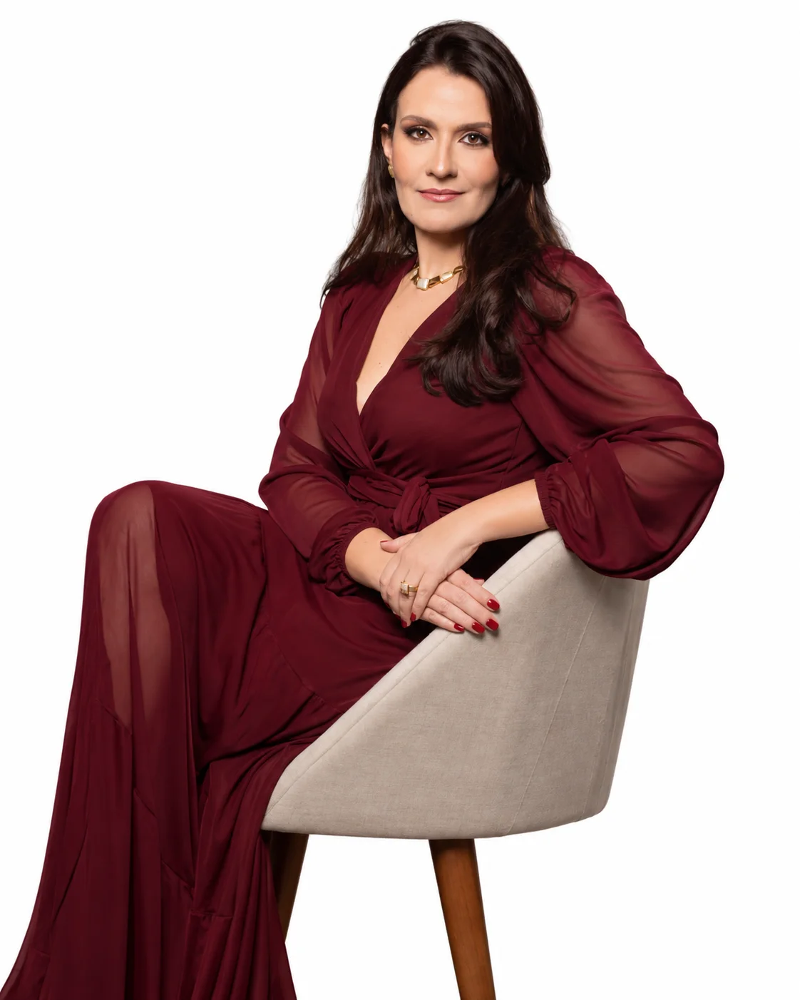
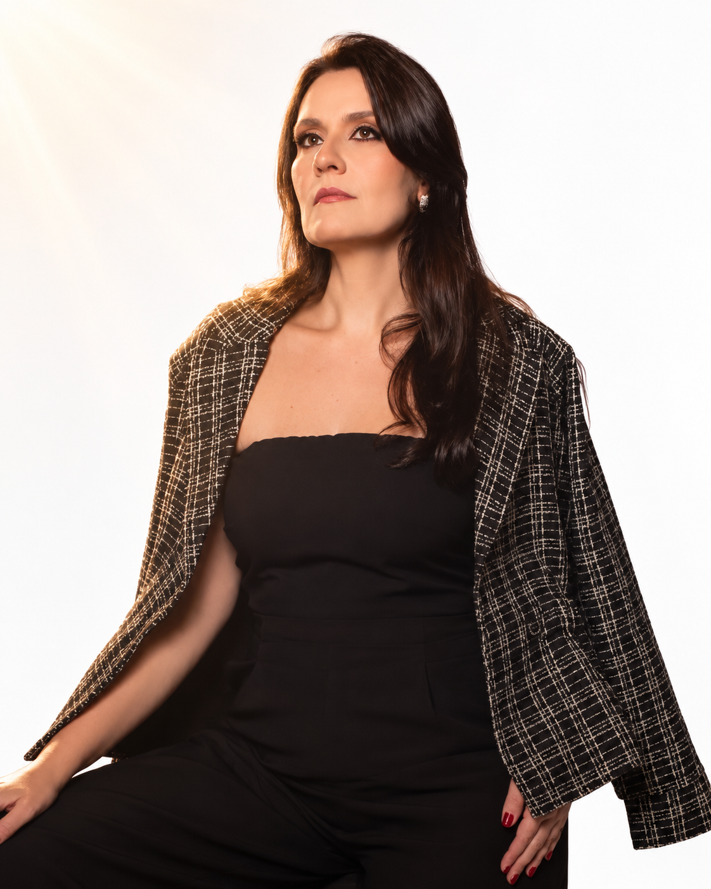
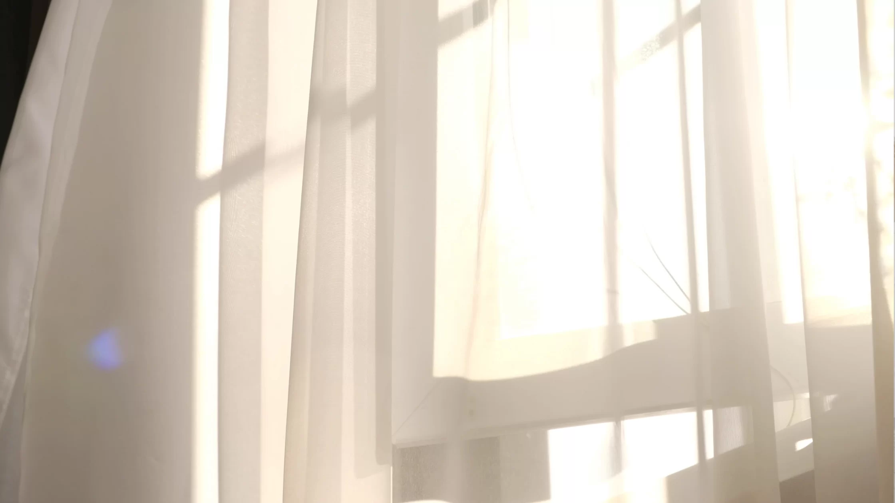

Eu conhecia a lei. Também conheci o medo.
Sei de cor o que a lei manda fazer quando uma mulher foge de um feminicídio.
Uma história de fé e recomeço
Mulher. Mãe. Cristã. Servidora pública. Sobrevivente. Uma voz que transforma feridas em caminho e silêncio em coragem.

Laila Hage | Salvador, Bahia01 · História pessoal

Me chamo Laila Hage, tenho 37 anos, sou mulher, mãe e sobrevivente.
Sou servidora do Tribunal de Justiça da Bahia, bacharela em Direito pela UFBA, tenho duas especializações e quase dez anos de advocacia em Direito de Família.
Sei de cor o que a lei manda fazer quando uma mulher foge de um feminicídio.
Este relato contém descrições de violência
O pai do meu filho apertou o meu pescoço até o ar acabar, gritando que ia tirar o demônio de dentro de mim. Depois vieram os socos, os chutes e o celular arremessado que quebrou a minha mão.
Os dedos do meu pé foram abertos à força até fraturar, enquanto ele descrevia como iria picar o meu corpo e dar descarga na latrina.
Todos os dias havia também o que não deixa marca: violência psicológica extrema, com ataques ao meu corpo e à minha alma. Lixo, depósito de esperma, demônio.
Denunciei. E a violência trocou de roupa: vestiu toga, farda e beca.
O inquérito parou. Ele descumpriu a medida protetiva passeando escoltado pelos corredores do tribunal onde trabalho. Me ameaçaram com alienação parental por ter medo de entregar meu filho a ele.
Uma desembargadora decidiu em minutos, sem me ouvir, e meu filho voltou para casa intoxicado. A Ordem dos Advogados entrou no meu processo para pedir que a minha proteção fosse reduzida e que ele não fosse preso por descumprir a medida, mesmo tendo confessado.
Chamou a minha segurança de “ganho irrelevante”. Uma instituição inteira, de pé, pelo homem que me estrangulou grávida.
Gravei um vídeo mostrando aquela petição. Vieram mensagens de mulheres de todo o país com a minha história e outros nomes. Advogadas, médicas, juízas, mães. Estranguladas em casa e depois estranguladas pelo processo.
Eu não escolhi virar referência. Aconteceu. E quando aconteceu, entendi para que eu tinha sobrevivido.
Ainda estou sangrando. Tenho processos abertos, um filho para proteger e noites em que o pescoço lembra. Mas processo a minha dor em público porque ela estanca o sangue de outras.
Cada mulher que me escreve dizendo “eu me vi na sua história” é uma a menos calada. E eu bem sei o quanto é solitário e sufocante não poder falar.
Deus não quis a minha dor. Mas não deixou que ela fosse à toa. Esta é a minha missão. Por ela, sigo de pé.
“Sobreviver foi o começo. Encontrar a minha voz foi o caminho. Usar essa voz por outras mulheres é o propósito.”Manifesto | Laila Hage
Um relato sobre atravessar a dor sem permitir que ela seja a última palavra. Lumen nasce do encontro entre memória, fé e coragem, como companhia para quem também procura um caminho de volta à própria luz.
Baixar agora Leitura gratuita · acesso pelo Google Drive
02 · Assista
03 · O que me move
A fé não apaga a dor. Ela acende um caminho dentro dela.
É onde encontro força para continuar, mesmo quando ainda não consigo ver a chegada.
Dar nome ao vivido é recuperar a própria história.
Quando a verdade encontra espaço, o silêncio deixa de decidir quem somos.
Ninguém deveria atravessar a escuridão sozinha.
Uma palavra, uma escuta e uma presença verdadeira também podem ser luz.
Continue perto
Acompanhe novos relatos, reflexões e conversas.